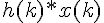
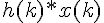
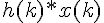

и
и  , которые имеют дискретное преобразование Фурье и соответственно то дискретное преобразование свёртки  представляет собой произведение
, которые имеют дискретное преобразование Фурье и соответственно то дискретное преобразование свёртки  представляет собой произведение Теорема о свёртке: если есть 2 последовательности во временной области и , которые имеют дискретное преобразование Фурье и соответственно то дискретное преобразование свёртки  представляет собой произведение
Пользуясь теоремой о свёртке можно разработать алгоритм синтеза КИХ фильтра